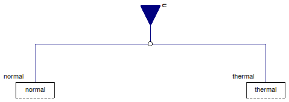
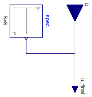

Table of Contents
- User's Guide
- BCs
- Sensors
- Assemblies
- Regions
- Subregions
- Connectors
- Characteristics
- Units
- Quantities
- BaseClasses
Download
- Latest: FCSys-2.0.zip (**Please check back soon or contact kdavies4 at gmail.com.)

| Name | Description |
|---|---|
| PartialSpecies | Partial BC for a face of a Species model (single-species) |
| Partial model for a BC |

| Type | Name | Default | Description |
|---|---|---|---|
| Assumptions | |||
| ThermoOpt | thermoOpt | ThermoOpt.OpenDiabatic | Options for material and thermal subconnectors |
| Material | |||
| Density | material | redeclare Material.Density m... | Type of condition |
| Heat | |||
| Temperature | thermal | redeclare Thermal.Temperatur... | Type of condition |
| Type | Name | Description |
|---|---|---|
| RealInputBus | u | Input bus for external signal sources |
model PartialSpecies "Partial BC for a face of a Species model (single-species)" extends FCSys.BaseClasses.Icons.BCs.Single; parameter ThermoOpt thermoOpt=ThermoOpt.OpenDiabatic "Options for material and thermal subconnectors"; // Materialreplaceable Material.Density material(spec(k=4*U.C/U.cm^3)) if thermoOpt == ThermoOpt.OpenDiabatic constrainedby Material.BaseClasses.PartialBC "Type of condition"; // Heatreplaceable Thermal.Temperature thermal(spec(k=298.15*U.K)) if thermoOpt <> ThermoOpt.ClosedAdiabatic constrainedby Thermal.BaseClasses.PartialBC "Type of condition"; // Note: Dymola 7.4 doesn't recognize enumerations in the dialog enable // option, e.g., // enable=thermoOpt <> ThermoOpt.ClosedAdiabatic. // Therefore, the values of the enumerations are specified numerically.FCSys.Connectors.RealInputBus u "Input bus for external signal sources"; equation // Materialconnect(u.material, material.u); // Heatconnect(u.thermal, thermal.u); end PartialSpecies;

| Type | Name | Default | Description |
|---|---|---|---|
| Boolean | internal | true | Use internal specification |
| Constant | spec | redeclare Modelica.Blocks.So... | Internal specification |
| Type | Name | Description |
|---|---|---|
| input RealInput | u | Value of BC |
partial model PartialBC "Partial model for a BC" extends FCSys.BaseClasses.Icons.BCs.Single; parameter Boolean internal=true "Use internal specification";replaceable Modelica.Blocks.Sources.Constant spec if internal constrainedby Modelica.Blocks.Interfaces.SO "Internal specification"; FCSys.Connectors.RealInput u if not internal "Value of BC"; protected FCSys.Connectors.RealInputInternal u_final "Final value of BC"; equationconnect(u, u_final); connect(spec.y, u_final); end PartialBC;